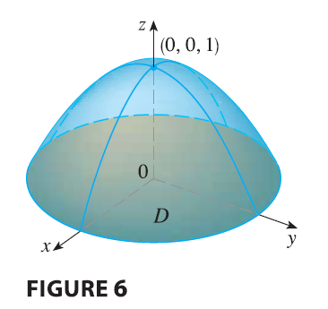

EXAMPLE 2 Find the volume of the solid bounded by the plane \(z = 0\) and the paraboloid \(z = 1 - x^2 - y^2\).

SOLUTION If we put \(z = 0\) in the equation of the paraboloid, we get \(x^2 + y^2 = 1\). This means that the plane intersects the paraboloid in the circle \(x^2 + y^2 = 1\), so the solid lies under the paraboloid and above the circular disk \(D\) given by \(x^2 + y^2 \le 1\). In polar coordinates \(D\) is given by \(0 \le r \le 1, 0 \le \theta \le 2\pi\). Since \(1 - x^2 - y^2 = 1 - r^2\), the volume is \[ V = \iint_D (1 - x^2 - y^2) dA = \int_0^{2\pi} \int_0^1 (1 - r^2) r dr d\theta \] \[ = \int_0^{2\pi} d\theta \int_0^1 (r - r^3) dr = 2\pi \left[ \frac{r^2}{2} - \frac{r^4}{4} \right]_0^1 = \frac{\pi}{2} \] If we had used rectangular coordinates instead of polar coordinates, then we would have obtained \[ V = \iint_D (1 - x^2 - y^2) dA = \int_{-1}^1 \int_{-\sqrt{1-x^2}}^{\sqrt{1-x^2}} (1 - x^2 - y^2) dy dx \] which is not easy to evaluate because it involves finding \(\int (1 - x^2)^{3/2} dx\).